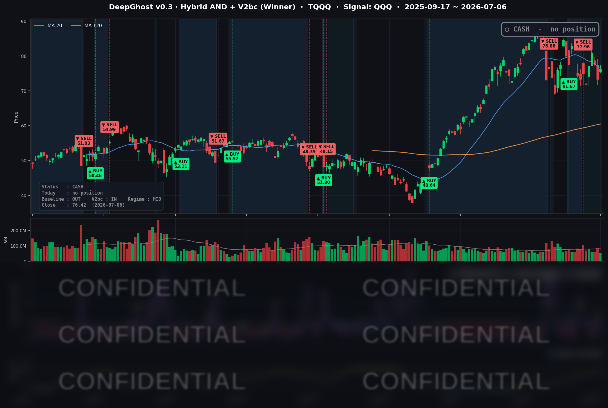

👻 매일 시그널과 히스토리를 홈페이지에서 한눈에 → www.ghostai.co.kr
지난주 기술주 매도세가 하루 만에 되돌려졌습니다. 특별히 악재도 호재도 없는 시장상황입니다. 모델이 중요시 생각하는 방향성 지표는 거의 무방향성을 가리키고 있습니다.
역사적으로 봤을때 이런 경우 현금 보유 기간이 길어졌습니다. 향후 추세가 하방으로 잡힐 경우 큰 손실이 발생할텐대, 이를 회피하기 위함입니다.
📊 오늘의 매매 신호
| 항목 | 내용 |
|---|---|
| 오늘 할 일 | ✅ 아무것도 안 해도 됩니다 |
| 포지션 상태 | 💵 현금 보유 중 (OUT OF POSITION) |
| 현금 보유 기간 | 2026-06-25 ~ 2026-07-06 (11일) |
| TQQQ 종가 | $76.42 (+4.19%) |
지난 6/25 매도로 현금 상태에 들어선 뒤 계속 관망 중입니다. 오늘 TQQQ가 하루 +4.19% 급반등했지만, 모델은 새로운 매수 신호를 내지 않았습니다. 되돌림 반등이 진짜 추세 전환인지 아직 확인되지 않은 만큼, 확인 전에는 뛰어들지 않는다는 것이 원칙 입니다. 횡보 지표가 좋지 않습니다. AI 모델은 현재 상황을 먹을게 없는 리스키한 시장으로 판단하고 있습니다.
TQQQ 시그널 — OUT OF POSITION
현재 상태: 현금 보유 중 | 6/25 매도 이후 관망

급락을 피하는 신중함과 하루짜리 반등을 추격하지 않는 신중함은 동전의 양면입니다. 되돌림이 하루짜리 저가매수인지, 추세 재개인지 며칠 더 지켜볼 구간입니다.
오늘 미국 시장 — 시황 요약
지수 마감
| 지수 | 종가 | 등락률 |
|---|---|---|
| S&P 500 | 7,537.43 | +0.72% |
| 나스닥 종합 | 26,121.16 | +1.12% |
| 다우 존스 | 53,055.91 | +0.29% |
| 러셀 2000 | 3,009.54 | +0.45% |
전 지수가 상승 마감했습니다. 특히 나스닥(+1.12%)이 다우(+0.29%)를 뚜렷하게 앞지르며 성장·기술주가 리더십을 되찾았습니다. 지난주 반도체·테슬라를 두들겼던 차익실현 매도가 3일 연휴를 지나 그대로 되감긴 하루였습니다. QQQ +1.43%, 3배 레버리지 지표인 TQQQ는 +4.19% 급반등했습니다.
국채 금리 동향
| 만기 | 수익률 | 전일 대비 |
|---|---|---|
| 3개월 | 3.690% | +2.2bp |
| 5년 | 4.211% | -1.9bp |
| 10년 | 4.479% | -0.6bp |
| 30년 | 4.993% | +0.8bp |
금리 변동폭은 매우 제한적이었습니다(모두 ±2bp 안팎). 단기물(3개월)이 소폭 오르고 5년물이 내리며 커브 앞단이 약간 눌렸는데, 이는 6월 고용 부진에 따른 "연준이 더 조이긴 어렵다"는 심리가 반영된 흐름입니다. 10년-3개월 스프레드는 +78.9bp로 정상(우상향) 구간을 유지했습니다. 결국 이번 주식 반등의 연료는 금리 하락보다 기술주 쪽 위험자산 선호 회복과 개별 재료였습니다.
연준 발언 & 금리 패스
직전 FOMC(6월 16~17일)는 기준금리 3.50~3.75% 동결이었습니다. 신임 의장 케빈 워시는 물가 안정 의지를 "명확하고 만장일치"라며 매파적 동결 톤을 유지했고, 6월 점도표는 연말 물가 전망(PCE 3.6%)을 상향해 인플레이션 지속성을 반영했습니다. 선물시장은 올해 연내 금리 인하 0회 시나리오를 유력하게 봅니다. 다음 관문은 7월 8일(수) 공개되는 6월 FOMC 의사록으로, 매파 강도에 따라 단기 변동성의 방아쇠가 될 수 있습니다.
오늘의 핵심 이슈
- 기술주 주도 반등 — 직전 세션의 AI·반도체 차익실현에서 벗어나, 반도체·고베타 성장주가 지수를 끌어올렸습니다. 퀄컴 +5.80%, 브로드컴 +3.73% 등 반도체 강세가 두드러졌습니다.
- 테슬라 급등(+6.69%) — 2분기 인도량이 약 48만 대로 시장 예상을 크게 웃돈 서프라이즈에, 로보택시 서비스 마이애미 확대 소식이 더해지며 커버리지 종목 중 최대 상승했습니다.
- 나쁜 고용이 주식엔 호재 — 6월 신규 고용이 5.7만 명으로 예상(11.7만)을 크게 밑돌았지만, 시장은 이를 경기 둔화 걱정이 아니라 "연준이 더 조일 명분이 약해졌다"는 안도로 읽었습니다.
변동성 & 투자심리
공포지수(VIX)는 15.57로, 직전 유효값(7/2 16.15) 대비 0.58포인트 내렸습니다. 15 중반은 저변동성·안도 구간으로, 지수 전반 상승과 나스닥 아웃퍼폼을 종합하면 시장 심리는 탐욕(그리디) 쪽으로 기운 낙관 국면입니다. 지난주 방어·순환매 무드에서 이번 주 위험자산 선호로 분위기가 바뀐 하루였습니다. 다만 저변동성·고밸류에이션은 작은 악재에도 흔들릴 수 있는 얇은 안도라는 점은 유념할 대목입니다.
매크로 & 원자재
- 유가: WTI $68.69(보합), 브렌트 $72.12(+0.45%) — 방향성 부재.
- 금: $4,175.60(+1.53%) — 안전자산 수요와 물가 헤지 심리를 반영한 강세.
성장 둔화(6월 고용 부진)와 물가 고착(PCE 전망 3.6%)이 겹친 어정쩡한 구도라, 인하로 곧장 가기도 추가 인상을 하기도 어려운 국면입니다.
주요 종목 동향
| 종목 | 당일 종가 | 등락률 | 비고 |
|---|---|---|---|
| AAPL | 312.66 | +1.31% | 하드웨어 동반 상승, 특이 촉매 없음 |
| NVDA | 195.55 | +0.37% | 반도체 반등장에서 상대적 소폭 |
| MSFT | 386.74 | -0.96% | 커버리지 유일 하락, 순환매 소외 |
| GOOGL | 366.46 | +1.82% | AI 클라우드 수요 견조 |
| META | 600.29 | +2.98% | 자체 클라우드(Meta Compute) 서사 지속 |
| AMZN | 244.16 | +0.61% | 클라우드/AI 투자 사이클 수혜 |
| TSLA | 419.77 | +6.69% | Q2 인도 서프라이즈 + 로보택시 확대, 최대 상승 |
| NFLX | 76.02 | -2.10% | 반등장 소외, 커버리지 최대 하락 |
| AVGO | 373.90 | +3.73% | AI 인프라 수요, 반도체 리더십 동참 |
| QCOM | 186.48 | +5.80% | AI 데이터센터 성장 기대, 반도체 강세 선두 |
| INTC | 122.20 | +1.54% | 반도체 반등 동참 |
| MU | 984.75 | +0.94% | 직전 급락 후 소폭 반등 |
Ghost.AI — Quantitative AI Investment
Model: DeepGhost v0.3 | Transformer-Based Deep Learning
Coverage: 13 tickers | Updated every trading day after US market close
⚠️ 본 자료는 정보 제공 목적으로만 작성되었으며 투자 권유가 아닙니다. 모든 투자의 책임은 투자자 본인에게 있습니다. 과거 성과가 미래 수익을 보장하지 않습니다.
[유의사항]
- 본 서비스는 불특정 다수를 대상으로 발행되는 단방향 정보 제공 서비스이며, 투자자 개인의 재산 상황·투자 목적·위험 선호도를 반영한 개별 투자 조언이 아닙니다.
- 고스트에이아이 주식회사는 고객과 쌍방향 의사소통(개별 상담, 맞춤형 자문 등)을 제공하지 않습니다.
- 본 콘텐츠는 투자 권유 또는 매매 주문의 청약·청약의 권유에 해당하지 않으며, 최종 투자 판단 및 그에 따른 손익의 책임은 전적으로 투자자 본인에게 있습니다.
고스트에이아이 주식회사